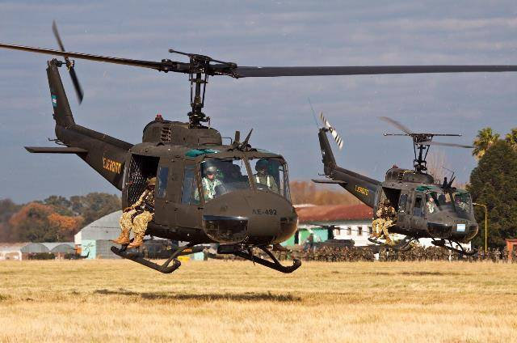

HELICÓPTEROS
Bell UH-1H / Bell UH-1H Huey 2
El helicóptero Bell UH-1H, comúnmente conocido como "Huey", fue utilizado por el Ejército Argentino desde 1970. Durante la Guerra de Malvinas en 1982, el Ejército Argentino desplegó nueve UH-1H y cumplieron misiones de transporte general, búsqueda y salvamento, y evacuaciones médicas, operando principalmente desde Puerto Stanley (Puerto Argentino). Su capacidad de adaptación al terreno los convirtió en una herramienta clave durante el conflicto. El UH-1H se transformó en un emblema de la participación argentina en Malvinas, destacándose por su confiabilidad en condiciones adversas. Con el paso del tiempo, el Ejército Argentino reconvirtió y modernizó estas aeronaves, mejorando su capacidad de carga, autonomía y desempeño general para adaptarlas a nuevas exigencias operativas. Esta reconversión se conoce como Bell UH-1H Huey II. Hoy, el UH-1H sigue destacando por su versatilidad y resistencia en diversos escenarios de operación. Se trata de un helicóptero multipropósito, ideal para transporte de tropas, evacuaciones médicas, apoyo logístico y misiones de reconocimiento. Su diseño robusto y su evolución tecnológica lo mantienen vigente en la actualidad.
Bell 206 JetRanger 3 / AB 206
El Bell 206, especialmente en su versión AB-206 B1 fabricada bajo licencia en Italia, ha sido una pieza clave en la Aviación del Ejército Argentino. Su uso principal ha sido en la formación de pilotos y en misiones de reconocimiento y exploración. La Escuela de Aviación del Ejército lo emplea en el Curso Básico Conjunto de Piloto de Helicópteros, que entrena a pilotos del Ejército, la Armada y la Fuerza Aérea. Su fiabilidad y facilidad de operación lo hacen ideal para instrucción básica. Equipado con la cámara FV-300, el AB-206 también cumple tareas de observación y apoyo a unidades de inteligencia. Su integración con simuladores y sistemas de radar potencia sus capacidades tácticas. La Fábrica Argentina de Aviones (FAdeA) colabora en su mantenimiento y modernización, asegurando su operatividad. Actualmente, el Ejército opera tanto AB-206 B1 como Bell 206 B3, manteniendo vigente su rol en la aviación militar argentina.

Bell 212
El helicóptero Bell 212 fue incorporado al Ejército Argentino en 1976 y asignado al Batallón de Helicópteros de Asalto 601, con base en Campo de Mayo. Se adquirieron dos unidades, destinadas a cumplir misiones de transporte, abastecimiento, evacuación médica y rescate. En 1977, uno de los helicópteros se perdió en un accidente mientras realizaba una misión de rescate en la isla Levingston. El otro continuó en servicio y fue utilizado inicialmente como transporte VIP para autoridades militares. Con el paso del tiempo, este helicóptero fue sometido a una actualización en la Fábrica Argentina de Aviones (FAdeA), donde se lo reconvirtió para tareas de transporte de asalto. Esta modernización se concretó en 2019, permitiendo extender su vida operativa. Desde entonces, el Bell 212 restante sigue activo en el Ejército Argentino, destacándose por su versatilidad y capacidad para operar en diversas misiones tácticas.

AVIONES
Cessna C550 - Citation B
El Ejército Argentino utiliza aviones Cessna Citation, especialmente el modelo 550 Citation Bravo, para misiones como evacuación sanitaria, transporte VIP y entrenamiento. Estas aeronaves se han convertido en herramientas clave para operaciones rápidas y eficientes. El Citation Bravo, una versión avanzada, incorpora aviónica moderna y motores Pratt & Whitney PW530A. El Ejército Argentino incorporó un Citation Bravo (AE-186) a fines de 2015, asignándolo al Batallón de Aviación de Apoyo de Combate 601. Esta aeronave agiliza mas que cualquier otra el enlace y la respuesta sanitaria cuando son requeridos.

Aviocar Casa 212
El CASA C-212 Aviocar es un avión de transporte táctico ligero de origen español, utilizado por el Ejército Argentino desde la década de 1990. Con capacidad para 26 soldados o 2.800 kg de carga, es ideal para misiones de lanzamiento de paracaidistas, evacuación médica y abastecimiento en zonas de difícil acceso. Su diseño robusto y su capacidad STOL (despegue y aterrizaje en pistas cortas) lo convierten en una herramienta clave para operaciones en entornos rurales o montañosos.

Cessna Grand Caravan EX
El Cessna C-208 Grand Caravan EX es un avión utilitario monomotor, incorporado por el Ejército Argentino para misiones de transporte logístico, evacuación sanitaria y enlace. Con capacidad para hasta 14 personas o 1.500 kg de carga, se destaca por su fiabilidad, bajo costo operativo y capacidad para operar en pistas no preparadas. Su versatilidad lo hace ideal para tareas en apoyo a unidades desplegadas en zonas remotas o de difícil acceso.

Diamond DA 62
El Diamond DA62 MPP ha sido incorporado por el Ejército Argentino para mejorar las capacidades en vigilancia, búsqueda y rescate, y apoyo logístico. Esta aeronave multipropósito, de origen austríaco, se distingue por su capacidad de carga y aviónica de última generación, lo que la convierte en una herramienta clave para vigilancia aérea y cartografía. Además, es crucial para el apoyo al Instituto Geográfico Nacional y la gestión de desastres naturales. El DA62 MPP fortalece el control del espacio aéreo y la eficiencia operativa del Ejército, reduciendo costos y aumentando la autonomía en diversas misiones.